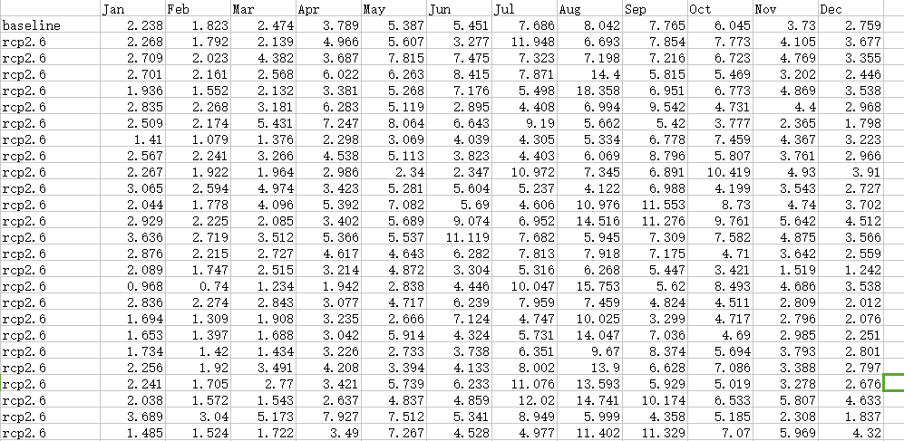
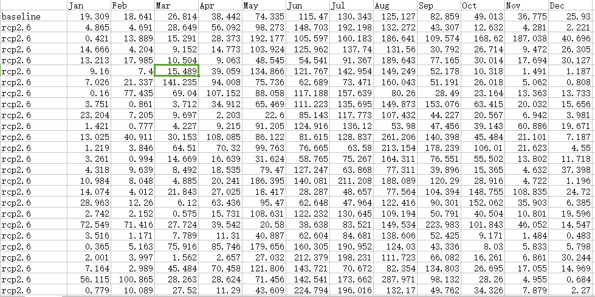
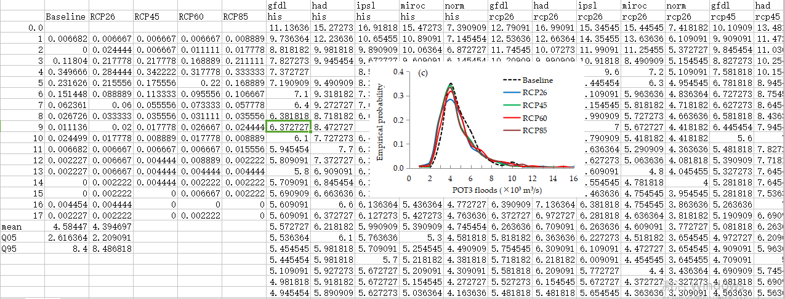
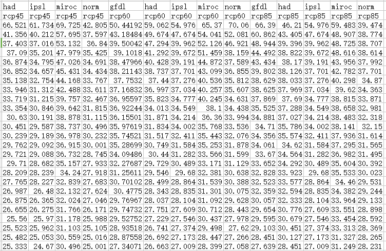

全球及中国气候变化预估调研报告
国家气候中心
摘要：IPCC评估报告发表以来，气候模式对未来气候变化的预估成了全球关注的问题。因此本报告调研了（Intergovernmental Panel on Climate Change，IPCC）和CMIP（Coupled Model Intercomparison Project Phase）的发展历史，以及IPC关键词：IPCC，CMIP，全球气候变化预估，中国气候变化预C第五次评估报告对全球未来气候变化预估的主要结论，并对一些学者基于耦合模式比较计划第五阶段（CMIP5）全球气候模式对中国未来气候变化预估做了分类总结。 估
1.引言
全球气候变化预估是当前气候变化研究的热点和核心问题之一, 在2005年召开的“气候模式模拟分析研讨会”( CMSAW 2005 ) 和“国际气象与大气科学协会年会”( IAMAS 2005 ) 上有许多新的成果。之所以成为热点, 是因为它不仅涉及到科学家和公众关心的未来十年、百年到千年时间尺度的气候变化的可能情景, 特别是与人类生活密切相关的极端气候事件未来的可能变化趋势, 而且它还涉及到各国政府间关于全球气候变化的协商、公约谈判、减排以及军事和安全等诸多方面。
2.IPCC和CMIP计划
2.1Intergovernmental Panel on Climate Change 认识到潜在的全球气候变化问题，世界气象组织（WMO）和联合国环境规划署（UNEP）于1988年建立了政府间气候变化专门委员会（Intergovernmental Panel on Climate Change，IPCC）。它对联合国和WMO的全体会员开放。 考虑到人类活动的规模已开始对复杂的自然系统，如全球气候产生了很大的干扰。许多科学家认为，气候变化会造成严重的或不可逆转的破坏风险，并认为缺乏充分的科学确定性不应成为推迟采取行动的借口。而决策者们需要有关气候变化成因、其潜在环境和社会经济影响以及可能的对策等客观信息来源。而IPCC这样一个机构的地位能够在全球范围内为决策层以及其他科研等领域提供科学依据和数据等。IPCC的作用是在全面、客观、公开和透明的基础上，对世界上有关全球气候变化的现有最好科学、技术和社会经济信息进行评估。这些评估吸收了世界上所有地区的数百位专家的工作成果。IPCC的报告力求确保全面地反映现有各种观点，并使之具有政策相关性，但不具有政策指示性。 IPCC下设三个工作组和一个专题组：第一工作组，评估气候系统和气候变化的科学问题。第二工作组，评估社会经济体系和自然系统对气候变化的脆弱性、气候变化正负两方面的后果和适应气候变化的选择方案。第三工作组，评估限制温室气体排放并减缓气候变化的选择方案。主要产品是：评估报告、特别报告、方法报告和技术报告。每份评估报告都包括决策者摘要。摘要反映了对主题的最新认识，并以非专业人士易于理解的方式编写。 气候变化情景在全球和区域气候变化预估中得到广泛应用，温室气体排放情景是气候模拟的基础，影响温室气体排放的社会经济驱动因素，如人口增长、经济发展、技术进步、环境条件、社会管理等假设组成了社会经济情景。IPCC 先后发展了SA90、IS92、SRES 等情景，应用于历次评估报告。随着气候变化影响评估的发展，SRES 情景的不足逐步显现，为此，IPCC调整了情景的发展方法和过程，发展了新的情景框架[1-2]，于2007 年发布典型浓度路径（representative concentration pathways,RCPs）来描述温室气体浓度，并在RCPs 的基础上发展共享社会经济路径（shared socio-economicpathways, SSPs）来构建社会经济新情景。
表1 IPCC气候变化情景的发展阶段与应用情况（曹格丽，2012）
IPCC气候变化情景从简单的CO2 加倍及递增试验，到SA90、IS92 情景，再到SRES情景和RCPs情景，对温室气体排放量的估算方法越来越先进和全面，相应的社会经济假设也从简单描述走向定量化，并纳入人为减排等政策的影响，对过去和未来温室气体排放状况、未来技术进步和新型能源的开发与使用对温室气体排放量的影响不确定也有了进一步的考虑和假设，政府管理和气候政策对排放量的影响逐步纳入评估范围（表1，曹丽格，2012）。社会经济新情景SSPs不仅可用于全球、区域，还可以应用在具体部门（如能源、农业等），为分析不同的气候政策（人为减排）、社会经济发展模式的成本和风险提供了可能。2012年IPCC发布用于IPCC AR5的一部分社会经济数据，为模拟气候变化, 评估其影响、减缓及适应能力服务，目前，情景组已经为IPCC AR5第二工作组作者提供了有关SRES情景、RCPs和SSPs间的对应信息（图1）, 其中SRES A2情景相当于RCP8.5 气候情景和SSP3或SSP4社会经济情景；B2情景相当于RCP6.0气候情景和SSP2 社会经济情景；Bl情景相当于RCP4.5气候情景和SSP1社会经济情景；A1F1情景相当于RCP8.5气候情景和SSP5社会经济情景；没有具体的SRES情景与RCP2.6 相对应（张杰等，2013）。
图1. RCPs、SERES和SSPs的相互关系与映射（张杰等，2013）
2.2 Coupled Model Intercomparison Project Phase计划
气候系统由大气圈、水圈、冰冻圈、岩石圈和生物圈等5个圈层组成，地球气候的变化包括由气候系统各圈层相互作用过程引起的内部变率、自然因子变化（包括地球轨道参数、太阳活动、火山活动）引起的自然变率与人类活动相关的因子变化（温室气体和气溶胶等大气成分变化、土地利用变化等）造成的人为变化3部分组成，能够模拟上述过程的是考虑了大气-海洋-陆面-海冰之间复杂的相互作用的气候系统模式（周天军，2014）。气候系统模式室莉姐气候系统的变化规律、再现其过去演变过程、预测和预估其未来变化的重要工具。 世界气候研究计划（WCRP）在推动大气模式（GCM）、气候系统模式（CSM）乃至地球系统模式（ESM）的发展中发挥了重要作用。WCRP相继组织了从“大气模式比较计划”（AMIP）（Gates，et al., 1992）到“耦合模式比较计划”（Coupled Model Intercomparison Project Phase 6，CMIP）（Meehl et al., 1997,2000）等一系列国际模式比较计划。利用CMIP计划的气候模拟和预估结果所发表的大量论文，构成了大致每5年颁布一次的IPCC科学评估报告的重要组成部分，目前第六阶段耦合模式比较计划（CMIP6）正在进行中。 CMIP6的核心是生物地球化学强迫和反馈，主要包括：云，环流和气候敏感性；冰冻圈的变化；气候极值；区域气候信息；区域的海平面上升；水的有效性；生物地球化学强迫和反馈。另外，CMIP6还有特别实验设计，即：地球系统如何响应强迫；模式的系统偏差的来源和后果是什么？我们如何评估未来的气候变化，以及如何给出气候变率，可预报性和情景的不确定性。CMIP6的模拟和预估不同于以往的对比试验，这次的试验留出许多空白的多模式对比试验，由各国专家自行设计和组合来做对比试验。
3.全球气候变化预估研究
本研究使用的气候模式数据来自于ISI-MIP项目（Inter-Sectoral Impact Model Intercomparison Project）。数据以WATCH（0.5°×0.5°）为参数数据，采用保留趋势变化的偏差订正方法，对CMIP5中GFDL-ESM2M（GFDL），HaDGem2-ES（HadGem），IPSL_CM5A_LR（IPSL），MIROC-ESM-CHEM（MIROC）和NorESM1-M（NorESM）5个全球气候模式数据进行订正。本研究使用的气象要素为日平均气温和日降水量，时间序列为1961－2050。
图一

图二

图三

图四

-
8个CMIP5模式对中国极端气温的模拟和预估
《气候变化研究进展》 2012年04期
-
CMIP6的设计
《气候变化研究进展》 2016年03期
以上文献链接来源于中国知网CNKI知识搜索，所有权益归©中国知网所有